Вітальня · журнал «ДентАрт» 2017 №4
Українська академія дитячої стоматології: одна команда, одна мета, одна пристрасть
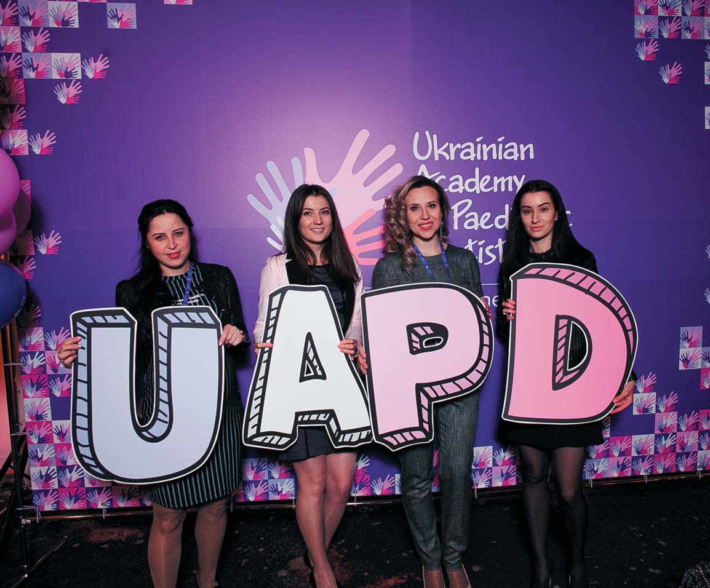
Сьогодні у «Вітальні» ДентАрта на читачів очікує зустріч з президентом Української академії дитячої стоматології Катериною Гераніною і віце-президентом Дариною Толкачовою – засновницями цієї молодої, але дуже активної професійної організації. І зустріч ця не випадкова, адже в останні роки стоматологія дитячого віку перестає бути спеціальністю другого плану. І у стоматологічної спільноти, і у суспільства взагалі з'явилося розуміння того, наскільки важлива турбота про стоматологічне здоров'я дітей, своєчасна і кваліфікована допомога яким може запобігти безлічі проблем «дорослої» стоматології.
– Раді вітати вас, Катерино Іванівно і Дарино Євгенівно, у редакції «ДентАрта»! Почнемо з початку. Як народилися ідея УАДС і її девіз?
Катерина Гераніна: На жаль, тривалий час до дитячих стоматологів ставилися несерйозно: і колеги, і батьки наших маленьких пацієнтів вважали, що молочні зуби тимчасові, вони все одно випадуть, навіщо витрачати на лікування багато сил і ресурсів. Крім того, випускники стоматологічних факультетів не бачили професію дитячого стоматолога як свою майбутню і дуже часто дитячими стоматологами ставали випадково.
У головах міцно вкорінилися стереотипи про те, що дитячий стоматолог — професія непрестижна, і якісно надавати стоматологічну допомогу дітям – це не так уже й важливо. Дитяча стоматологія залишалася поза фокусом основних стоматологічних заходів. Але в останні 2-3 роки ця спеціальність стала ближчою до інших напрямків. Нас визнають терапевти, імплантологи, пародонтологи і запрошують на спільні навчальні програми (семінари, конгреси).
Але крім визнання дитячого стоматолога як лікаря серйозної спеціальності, хотілося допомагати не лише лікарям, щоб вони розвивалися професійно і ділилися досвідом один з одним, – хотілося також поліпшити стоматологічне здоров'я дітей за рахунок спілкування з батьками.
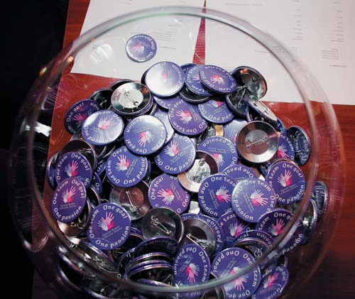
Кожен з дитячих стоматологів на своєму прийомі чує одні й ті самі запитання: невже треба чистити зуби з появою першого зуба у дитини? Невже тимчасові зуби потрібно лікувати? Невже у тимчасових зубів є корені і канали? Чи не простіше видалити зуб, він же тимчасовий? І подібних запитань дуже багато!
Ми зрозуміли, що пора збирати команду однодумців, які допоможуть батькам і дітям у таких питаннях і поділяться лікарським досвідом один з одним.
Нині в Україні кілька організацій, які підтримують і розвивають дитячу стоматологію. У всіх нас одна мета — зробити нашу спеціальність популярнішою серед молодих стоматологів, випускників і надавати нашим пацієнтам сучасну і якісну стоматологічну допомогу.
Зараз УАДС працює над базою клінік, які надають послуги дитячої стоматології по всій Україні. Скажімо, ви поїхали у відпустку з донькою в Кам'янець-Подільський, і у неї розболівся зуб. Куди йти? До кого бігти? Наша команда допоможе вирішити цю проблему.
Українська академія дитячої стоматології – це новий формат громадської організації, яка дарує нові можливості лікарям, дітям та батькам. Наша мета – поліпшення комунікації лікарів один з одним і лікарів з пацієнтами. Про що і говорить наш девіз: «Одна команда, одна мета, одна пристрасть». Тільки в команді можна отримати гарний результат, якщо її об'єднує єдина мета і любов до справи.
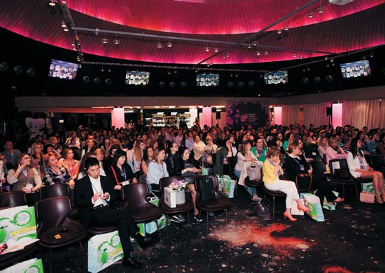
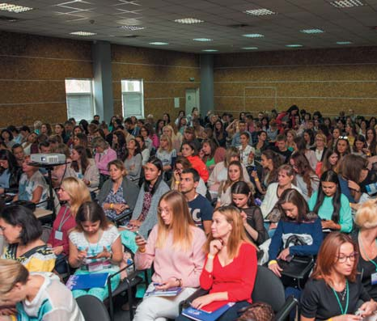
Міжнародний конгрес з дитячої стоматології «Нова генерація», м. Київ, квітень 2017 р. Симпозіум з дитячої стоматології під час виставки «Медвін», вересень 2017 р.
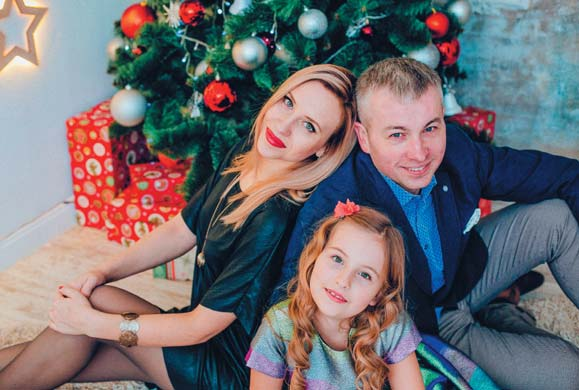
| Гераніна Катерина Іванівна | |
|---|---|
| Навчалася у Полтаві в Українській медичній стоматологічній академії, яку закінчила 2007 року. Два роки працювала у державній стоматологічній клініці в Ізмаїлі Одеської області. З 2011 р. працює у Полтаві в стоматологічному центрі «Махаон». Дитячий лікар-стоматолог. Головний напрямок клінічної роботи як дитячого лікаря-стоматолога – терапія, особливу увагу надає дитячій психології, естетиці, профілактиці, ендодонтії. Президент Української академії дитячої стоматології, одна із її засновниць. Лектор з дитячої стоматології, учасниця багатьох всеукраїнських і міжнародних конгресів. Стажувалася в Україні, Австрії, Чилі. Автор статей з дитячої стоматології. Виступала з постерною доповіддю у Сантьяго. Родина: чоловік – лектор, лікар-стоматолог Станіслав Геранін, донька Поліна. Хобі: подорожувати. Життєве кредо: Творити – це передусім не байдикувати. |
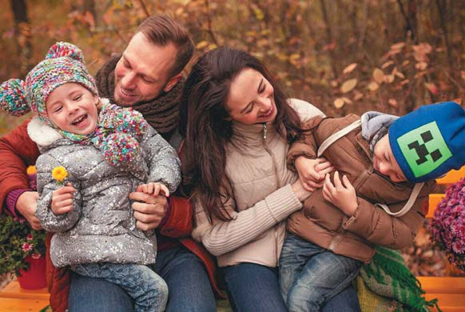
| Толкачова Дарина Євгенівна | |
|---|---|
| 2006 року закінчила з відзнакою Донецький державний медичний університет. Після закінчення інтернатури у 2008 р. працювала лікарем-терапевтом у приватній клініці. 2010 року отримала сертифікат з дитячої стоматології. 2013 року стала співзасновником Європейського центру дитячої стоматології у м. Харкові, де і працює дитячим лікарем-стоматологом. Основну увагу надає естетичній реабілітації дітей і лікуванню в умовах седації та загального знеболення. Віце-президент Української академії дитячої стоматології, одна із її засновниць. Стажувалася у Німеччині, Австрії, Італії та Польщі. Автор статей з дитячої стоматології, неодноразово виступала з постерними та стендовими доповідями на міжнародних конференціях у Києві, Відні, Сантьяго. Родина: чоловік Євген, діти Варвара і Володимир. Хобі: подорожувати. Життєве кредо: Роби те, що тобі подобається. Учись. Учи. Розвивайся. Змінюй себе всередині. |
– Українська академія дитячої стоматології існує тільки рік, але про неї вже багато інформації у професійних колах. Які найважливіші результати вашої роботи?
Дарина Толкачова: Ідея створення Академії з'явилася влітку 2016 року, наприкінці того ж року УАДС була оформлена офіційно, а презентована українським стоматологам у квітні 2017 року на Міжнародному конгресі з дитячої стоматології. У команди Української академії дитячої стоматології така структура: президент УАДС, віце-президент, секретар, регіональні представники УАДС, члени УАДС. Нині в УАДС 30 регіональних представників з різних областей України. Регіональні представники – це наша сила. Вони виконують великий обсяг роботи, завдяки чому Академія активно розвивається.
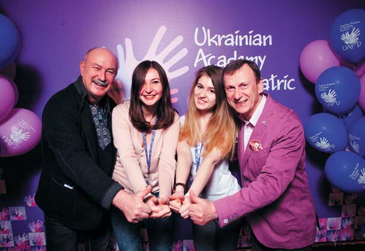
За минулий рік УАДС провела міжнародний конгрес з 350 учасниками і 17 спікерами, сім вебінарів для лікарів, симпозіум з дитячої стоматології на 270 учасників, близько 50 лекцій для батьків і дітей, дві зустрічі з регіональними представниками, на яких обговорювалися питання розвитку Академії. Результати таких заходів свідчать про актуальність нашої професії.
Головний результат – це палаючі очі лікарів, це зацікавленість батьків, це командна робота з лікарями інших спеціальностей.
Ще ми випускаємо товари, які допомагають дитячому стоматологові в роботі – це яскраві скляночки для дитячого прийому та Щоденник щасливої усмішки дитини, який допомагає батькам розібратися у багатьох питаннях і служить своєрідною стоматологічною картою, де лікар описує призначення, побажання, дати прийому і т.д. Нині ми працюємо над забезпеченням інформації для батьків, дітей і стоматологів інших напрямків – розробляємо різні посібники, які дадуть відповідь на найактуальніші питання.
– Які стереотипи, що стосуються дитячого лікаря-стоматолога, слід залишити в минулому?
Катерина Гераніна: Про деякі стереотипи у батьків я вже згадувала, але, безумовно, це ще не все.
Головним стереотипом стоматологів інших напрямків і батьків є переконання, що дитячий стоматолог працює лише для того, щоб видалити дитині зуб, усунути гострий біль, і що професія дитячий стоматолог – легка і не вимагає глибоких знань. Насправді сучасний дитячий стоматолог повинен знати багато і веде дитину від її народження до 16-ти років. Тобто дитячий стоматолог повинен знати тонкощі вагітності матері, харчування дитини від її народження, уміти допомагати батькам вибирати соски, засоби гігієни до прорізування першого молочного зуба, засоби гігієни відповідно до віку, уміти розпізнати інші захворювання ротової порожнини, аномалії закладки і розвитку зубів, планувати відповідно до цього подальше лікування, тому що правильне ведення пацієнта в ранньому віці зможе зменшити або усунути можливі патології у старшому віці. Ми ведемо дітей на різних етапах – до прорізування тимчасових зубів, у період появи тимчасових зубів, у період змінного прикусу, в період постійного прикусу.
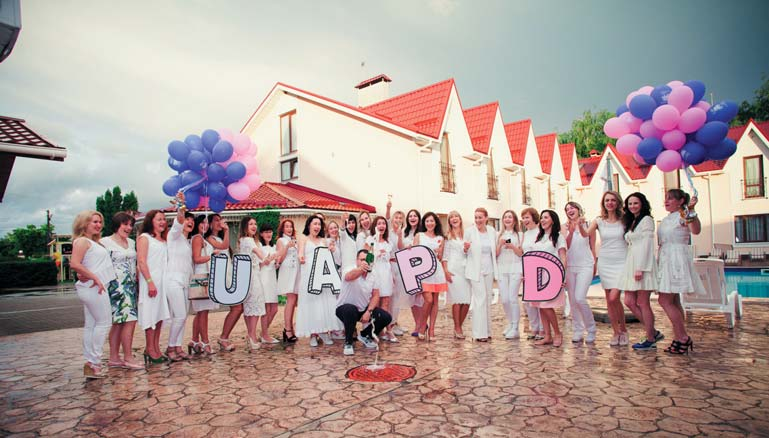
Крім того, дитяча стоматологія пов'язана не лише з безпосереднім лікуванням зубів, але і з психологічними аспектами, умінням взаємодіяти з дитиною і батьками, розпізнавати і диференціювати такі поняття, як тривога, страх, фобія (дуже часто дитячі стоматологи допомагають упоратися зі своїми страхами не тільки дітям, але і їхнім батькам).
Якщо говорити про стереотипи, які формуються у майбутніх лікарів-стоматологів, то найпоширеніший стереотип, що дитяча стоматологія – спеціальність непрестижна. Люди думають, що це нецікаво, що в дитячу стоматологію не можна йти за власним бажанням, а тим більше не можна бути дитячим стоматологом у приватній структурі, тому що дитяча стоматологія неприбуткова. Але це зовсім не відповідає дійсності.
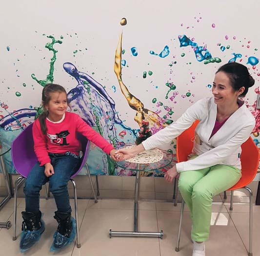
Можна дуже довго і докладно розвіювати міфи і стереотипи в цьому інтерв'ю, але ми це робимо під час наших заходів, і діяльність Академії саме і спрямована на боротьбу з різного роду стереотипами, які за багато років сформувалися у батьків, у лікарів, у студентів. Ми вважаємо, що наявність мотивації (у студентів, лікарів, батьків, дітей) – перший крок до розвитку якісної стоматології. У нашому випадку – це дитяча стоматологія.
– У ряді країн Західної Європи вдалося досягти великих успіхів у профілактиці карієсу у дітей. Як цього досягли і що з цього досвіду слід впровадити в Україні та інших країнах, де поширеність карієсу залишається високою?
Дарина Толкачова: Перша стаття про профілактику була опублікована у 1859 році. Якщо ми пошукаємо наукові та науково-популярні статті, то знайдемо десятки тисяч, де мова йде про профілактику стоматологічних захворювань. Проте рівень профілактики в Україні залишається низьким. Для того, щоб щось поліпшити, слід усвідомити всі помилки і недоробки і почати працювати над їх усуненням, адаптуючи до сучасних реалій.
Держава – це перший важіль до вирішення подібних питань. Починаючи з глобальних проблем (якість води і продуктів харчування) і закінчуючи програмами з профілактики у школах, дитсадках, навчанням культурі харчування дорослих і дітей. Поставити фільтри для води у певних регіонах і впровадити використання зубної щітки в дитячих садочках (як це практикується у Швеції, наприклад) – завдання для держави нескладне, а результат буде позитивним.
Ще дуже важливо налагодити комунікацію у ланцюжку стоматолог – педіатр, стоматолог – гінеколог, тому що гінеколог першим може розповісти майбутнім батькам про важливість санації ротової порожнини всіх членів сім'ї, а педіатр першим може розповісти про важливість догляду за ротовою порожниною дитини від самого народження, культуру годування дитини та інші важливі моменти, адже саме до педіатра передусім приходить мама з маленькою дитиною.
З чого почали ми? УАДС разом з регіональними представниками регулярно організовує лекції для батьків і дітей. Це не якась нудна інформація, а цікаві презентації з ілюстраціями, власними клінічними прикладами лікарів і обґрунтованими рекомендаціями. Для дітей організовуємо майстер-класи, адаптовані за віком.
Наша команда розробила презентації на всі теми, що стосуються стоматологічного здоров'я дітей, а нині працюємо над створенням серії статей для батьків і лікарів та посібників, які допоможуть зробити перші кроки до стоматологічного здоров'я дитини.
– Це дуже цінно, успішна робота дитячих стоматологів неможлива без просвіти батьків. Що для цього потрібно зробити в масштабах країни? І хто підтримує вашу Академію?
Катерина Гераніна: Як уже говорили, починається все із співпраці між лікарями та викорінення стереотипів у батьків. Ми ведемо дуже активну просвітницьку діяльність – це зустрічі з батьками, з вихованцями дитячих садків, шкіл, інтернатів, що їх організовують наші регіональні представники, робота з майбутніми мамами за програмою курсів для вагітних, а також зустрічі-бесіди в жіночих консультаціях, спільна робота з педіатрами.
Хотілося б зазначити, що без підтримки дуже складно активно розвивати будь-що. І в цьому плані нам пощастило – нас підтримують дуже багато організацій по всій Україні, у нас з'являються спонсори і меценати, крім того, ми дуже раді, що багато студентів з усієї України нам допомагають і цікавляться дитячою стоматологією!
І безумовно, не можна не відзначити колосальну підтримку наших сімей – батьки, чоловіки, діти співпереживають і підтримують кожне наше починання!
– Дуже важливо, щоб батьки вчасно звертали увагу на проблеми прикусу, скупченості зубів у дітей і зверталися до стоматологів. Ніхто ж не хоче, щоб у підлітковому віці його дитина страждала, дивлячись на себе в дзеркало. А йдеться до того, що нормальний прикус стане великою рідкістю. Це розплата за те, що homo sapiens перестав рвати зубами сире м'ясо?
Дарина Толкачова: Якщо ми говоримо про ортодонтичні патології, то в першу чергу лікарі мають на увазі функцію, а батьки мають на увазі естетику. Безумовно важливий аспект роботи дитячого стоматолога – співпраця з ортодонтом. У сучасному світі ми стикаємося з такою проблемою, як «лінощі жування». М'яка їжа не дозволяє зубощелепному апаратові функціонувати на повну силу, через що і розвиваються ортодонтичні патології раннього віку. Як ви правильно зауважили, раніше людина жувала твердішу їжу, а тепер дітей привчають до пюре та їжі з блендера. Це проблема сучасності, і в той час, коли батьки забезпечують наявність їжі, стоматолог вчить жувати.
Крім «лінощів жування», ми зустрічаємося з іншими численними ортодонтичними патологіями, до яких призводять неправильний вибір соски, шкідливі звички, раннє видалення зубів.
Слід розуміти, що неправильне розташування зубів у зубному ряду може призвести не лише до естетичних проблем, а й до порушення функції. Дитячі стоматологи – це сполучна ланка між пацієнтом та ортодонтом.
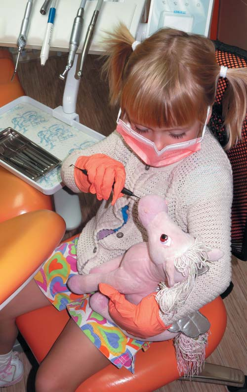
– Катерино Іванівно, серед ваших авторських навчальних програм для лікарів-стоматологів є курс, присвячений філософії дитячого прийому. У чому суть цієї філософії?
Катерина Гераніна: Так, у 2014 році я вперше провела курс під назвою «Філософія дитячого прийому». Що таке філософія дитячого прийому у моєму розумінні? Мабуть, наведу кілька прикладів.
Лікування карієсу фронтальних зубів у дітей – це стоматологія; виявлення психологічних проблем, пов'язаних з втратою естетики у фронтальній ділянці, і усунення їх – це психологія, а поєднання цих двох складових і впровадження у свою практику – це філософія.
Коли ми відкриваємо клініку з гарним обладнанням – це стоматологія; коли ми створюємо атмосферу, приємну для пацієнта, – це психологія, а розуміння тонкощів, безперервний взаємозв'язок різних послуг – це філософія.
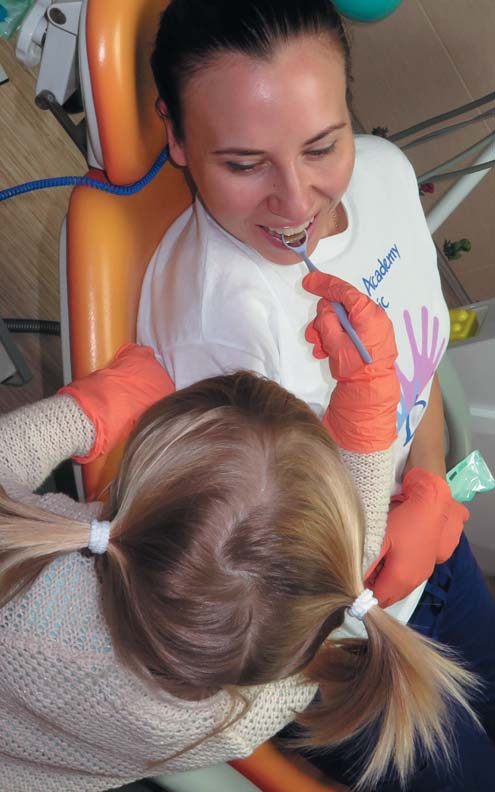
Наше завдання – створити нову концептуальну дитячу стоматологію, яка поєднуватиме в собі різні сфери взаємодії з пацієнтами. Філософія – це спосіб життя, це та концепція, до якої кожен з нас приходить з часом, помічаючи важливі деталі. Наша філософія – це якісна дитяча стоматологія для кожної дитини, яка враховує всі аспекти взаємодії між лікарем, пацієнтом і соціумом.
– Цікаво, чим був обумовлений ваш вибір професії стоматолога?
Дарина Толкачова: Мій вибір був обумовлений передусім тим, що мої батьки – стоматологи, і я із самого дитинства вирішила, що теж здобуду цю професію. Після закінчення школи були певні сумніви, але завдяки батькам, які вірили в мене і підтримували, я прийняла правильне рішення. Важливо також те, що потрапила у сприятливе середовище, гарний колектив після закінчення університету, де молодому лікареві, можна так сказати, створено «тепличні» умови для роботи і особистісного розвитку. У мене з'явився наставник, який спрямував у правильне русло і посприяв моєму подальшому професійному зростанню. І, звичайно, мій чоловік Євген цілком підтримує мене у всіх починаннях, дозволяючи мені поринути з головою в роботу і насолоджуватися своєю улюбленою справою.
Катерина Гераніна: Причина, чому я вибрала стоматологію, криється глибоко в дитинстві, але це особлива історія, про яку ми, можливо, поговоримо під час іншого інтерв'ю. А поки що мені б хотілося сказати, завдяки кому саме я змогла опанувати професію стоматолога. Коли настала пора обирати вуз для навчання, пріоритетом для мене був медичний інститут, але існували певні труднощі, зокрема й фінансові. Якщо не медичний інститут, мені було б усе одно, де навчатися, і тут мене підтримали батьки. Завдяки їм я розвиваюся як фахівець, намагаючись робити свою роботу краще.
Незважаючи на те, що я давно закінчила вуз і у мене своя сім'я, свій бізнес і ще багато інших захоплень, – батьки, сестра, чоловік і донька – це, мабуть, єдині люди, які підтримують мене завжди у всіх, навіть на перший погляд найризикованіших, починаннях.
– Ви обидві любите подорожувати. І зрозуміло, що багато ваших мандрівок пов'язані з професійною діяльністю. Яка з подорожей була найнезабутнішою?
Дарина Толкачова: Нам пощастило, тому що ми можемо вчитися і подорожувати одночасно. Відвідуючи конгреси європейського і світового рівня за кордоном, можемо присвятити кілька днів знайомству з країною. Найцікавішою, мабуть, була недавня наша поїздка у Південну Америку, в Чилі, на Міжнародний конгрес дитячої стоматології. Конгрес був дуже цікавим, виступали чудові лектори. Незабутні враження залишилися і від країни, де можна одночасно побачити все – і океан, і гори, і сніг, і спеку... Це було чудово!
– Що ви побажаєте колегам-стоматологам, які читатимуть це інтерв'ю?
Катерина Гераніна: Передусім я б хотіла побажати кожному бути рішучим у всьому, відкидати сумніви і любити те, що ми робимо, особливо якщо наша професія пов'язана з дітьми. Так, іноді складно, так, втомлюємося швидше, ніж лікарі загальної стоматології, але той результат, який ми бачимо після довгої і копіткої роботи, нівелює всі негативні моменти.
По-друге, хочу побажати щирості. У професії, у спілкуванні, в родині. Це та якість, яка може давати різні результати, але ніколи не матиме підтексту. І це та якість, яка, на жаль, зустрічається не так часто, як хотілося б, вона не залежить від віку, освіти, статусу і регалій. І чим більше я спілкуюся з людьми, тим ціннішою ця якість є для мене.
По-третє, побажаю всім колегам гармонії. У нас дуже активне і насичене життя – діти, сім'я, робота, навчання, поїздки, додаткові захоплення, нові технології, і дуже складно знайти той стан, в якому буде комфортно, а певні ситуації можуть вибивати нас із колії. Але розставляючи пріоритети, усвідомлюючи все-таки, що саме для кожного з нас є першорядним, а що – лише тимчасові перешкоди, ми зможемо зробити своє життя максимально гармонійним.
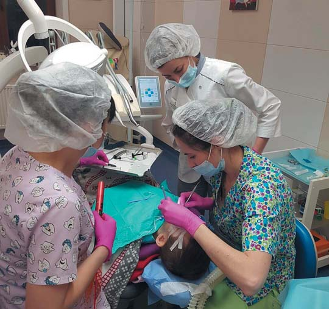
Дарина Толкачова: Я хочу побажати колегам не боятися ставити високі цілі. Це стосується не лише роботи, професії, а й життя в цілому. Найчастіше ми боїмося щось кардинально змінювати, сумніваємося, але коли все-таки знаходимо в собі сили це зробити – результат вражає.
Любіть свою професію, своїх пацієнтів – саме пристрасть до улюбленої справи, бажання допомогти і бути потрібним змушує нас розвиватися і бути найкращими для своїх клієнтів.
Цінуйте найпростіші моменти, проведені з вашими близькими. Читання перед сном, спільні вечері, прогулянки – не дозволяйте радості спілкування розчинитися у повсякденності.
Подорожуйте. Професія лікаря, і стоматолога зокрема, вимагає повної самовіддачі, і часом ми живемо лише проблемами наших пацієнтів. У такому випадку нам потрібне перезавантаження. Подорожі – чудовий привід не тільки побути наодинці зі своїми думками, поміняти картинку, але й отримати позитивні емоції.
– Успіхів вам і всій команді УАДС!
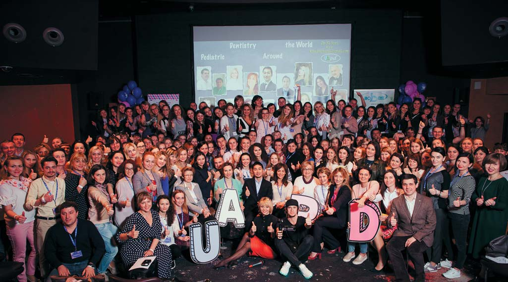
Розмовляла Ганна Антипович
Фото з архіву Катерини Гераніної і Дарини Толкачової